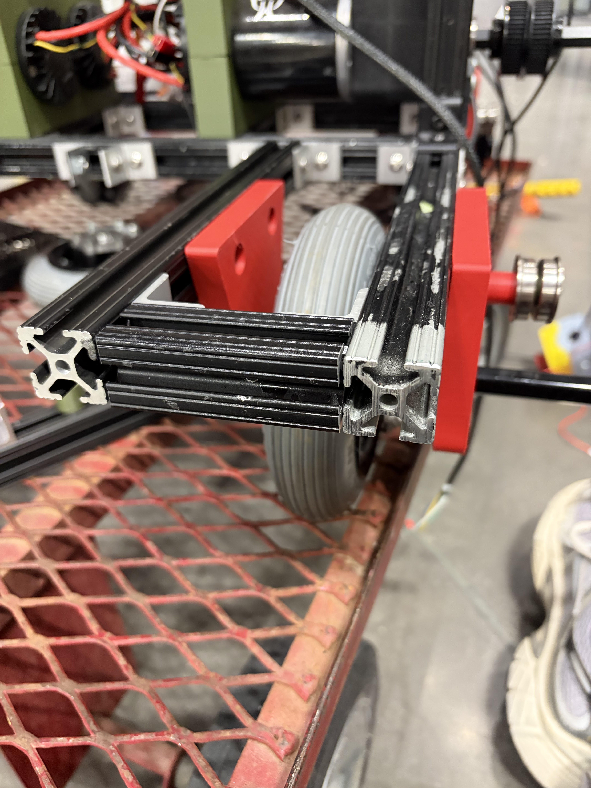

Multi-Disciplinary Robotics Club — Ultima
August 2026 – Present


Overview
Ultima is RIT's entry in the Intelligent Ground Vehicle Competition (IGVC), an autonomous ground vehicle competition. The team is building a robot designed to carry a payload while staying stable in motion.
My Contributions
I'm working on the structural frame that carries a 16"x8", 20lb payload while staying stable in motion, contributing design ideas alongside upperclassmen leads. Hands-on work has included cutting metal rods with a cold saw and drilling holes into a polycarbonate payload board.
The Engineering Challenge
Carrying a 20lb payload without sacrificing stability in motion is a real structural design problem — the frame has to be rigid enough to keep the payload steady while staying light and manufacturable with the tools and materials available to the team. Collaborating with team leads on the design has been a key part of getting the frame stable under that load.
Status
Currently in progress.